SIBO·SRB·후소박테리움·메틸메르캅탄·GLP-1·호흡가스 분석기·항생제… 진료에서 자주 나오는 이름들을 무대 · 먹이 · 용의자 · 산물 · 회로 · 결과 · 반대편 · 무기 여덟 갈래로 정리했습니다. 각 카드가 무엇을 만들고 어디로 이어지는지 한눈에.
증상이 시작되는 장소 — 세균과 진균이 소장에서 과하게 늘어난 두 상태.
소장에 세균이 과하게 늘어난 상태. 복부팽만·가스·설사·영양흡수 저하의 배경.
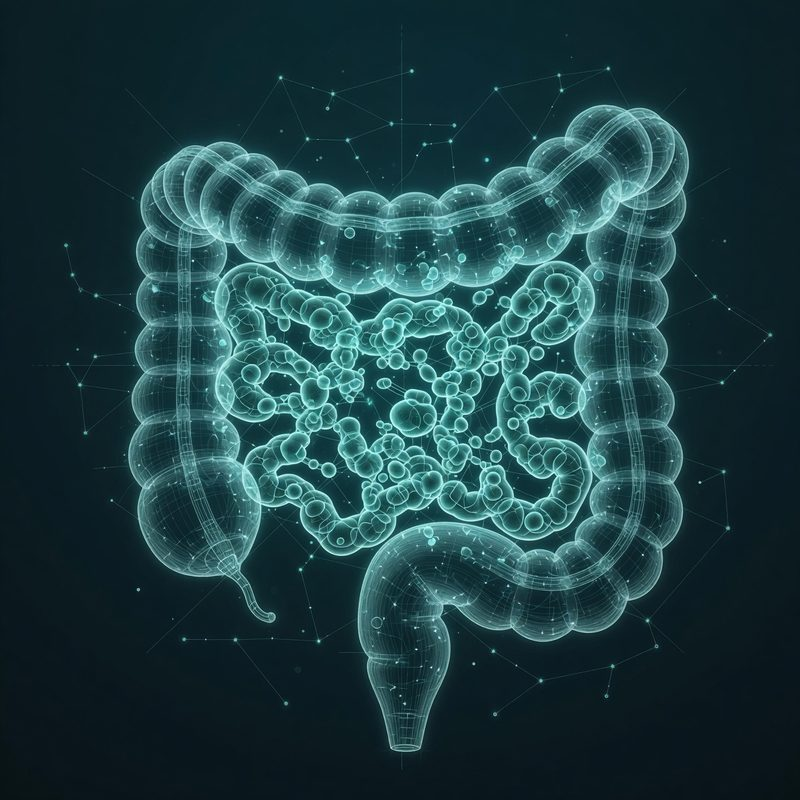
세균이 아니라 진균(효모·곰팡이)이 소장에서 과증식. SIBO와 증상이 겹칩니다.
"몸에 좋다"고 배운 것들이, 이 프레임에서는 세균의 먹이(기질)로 지목됩니다.
장에서 다 흡수되지 않고 대장으로 내려가 발효의 재료가 됩니다.
저속노화 식단으로 권장되지만, 난소화성 기질이 발효 시간을 늘립니다.
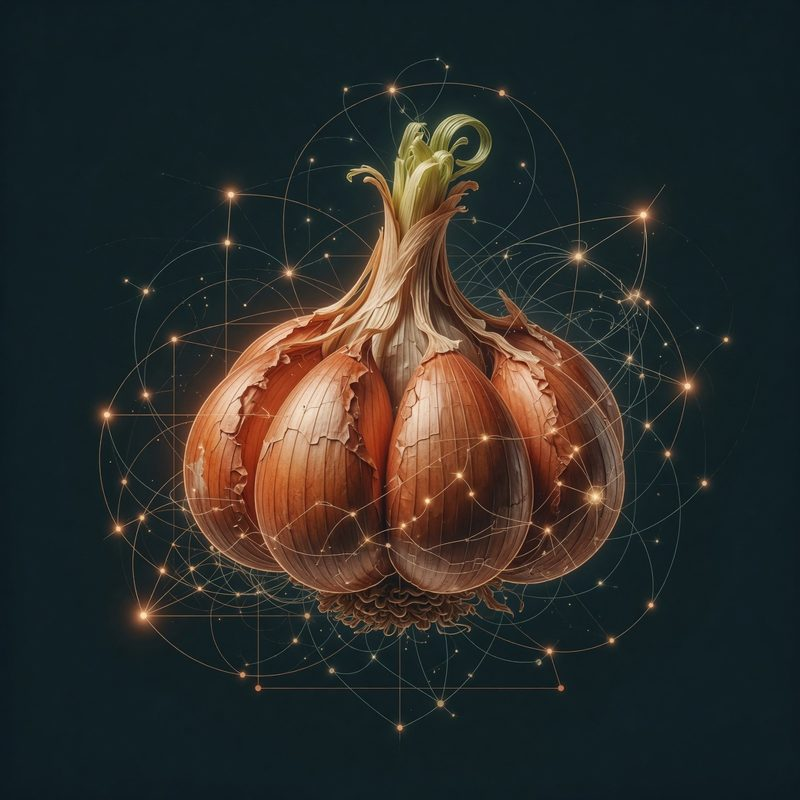
식물 황(黃)의 대표 공급원. 호흡가스 분석에서 가장 친염증성인 것 중 하나.
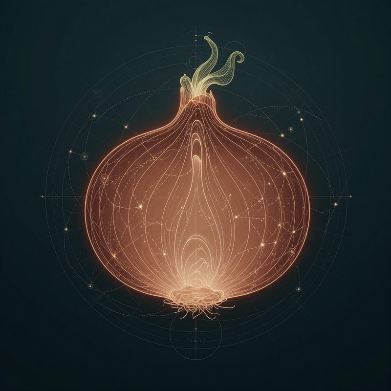
황과 프럭탄(난소화성 당)을 함께 공급해 장내 발효를 키웁니다.
외부 세균·진균을 몸에 직접 투입하는 셈. 한국 식단의 사각지대.
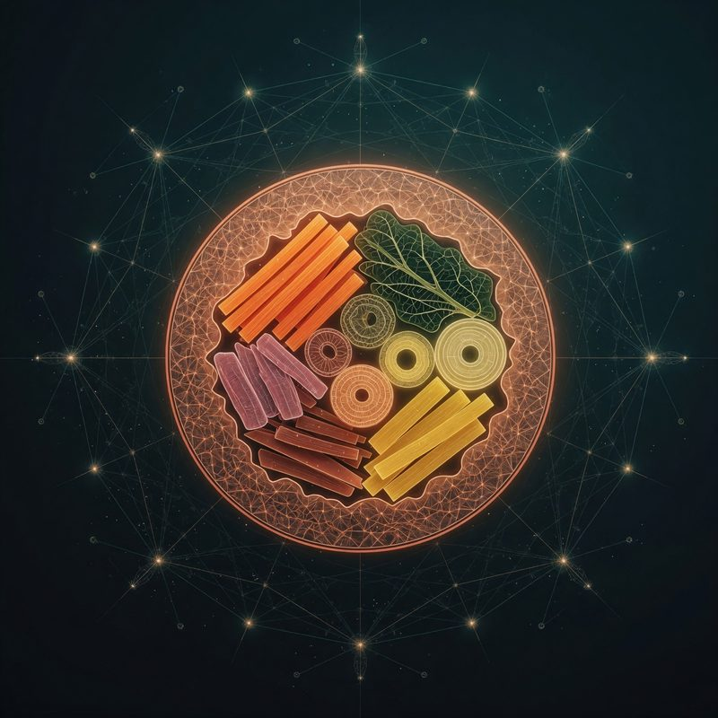
생채소·김·밥이 뭉친 상온 보관 한 끼 — 여러 기질과 세균 노출이 한 번에.
생채소를 그대로 먹는 것은 세균을 직접 섭취하는 일이며, 알칼리성이 환경을 바꿉니다.
'좋은 균'으로 팔리지만, 히스타민 생산균을 몸에 직접 투입하는 셈입니다.
계란·붉은 고기·생선에 풍부. 장내 세균이 이를 분해해 생선냄새(TMA)를 만듭니다.
흩어진 증상 뒤에서 반복해 등장하는 세균과 진균.
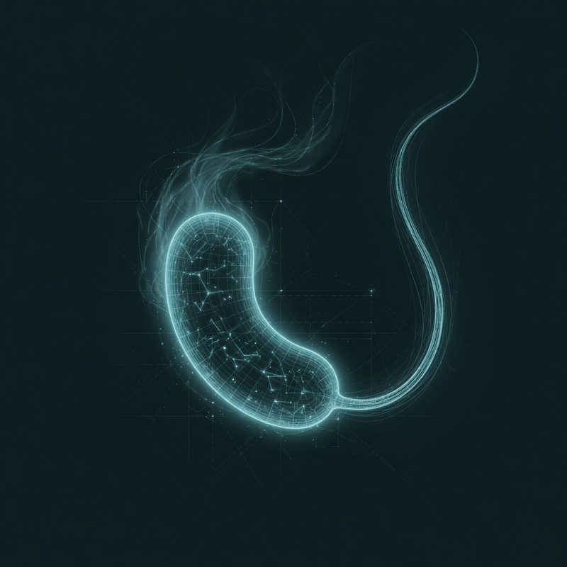
황을 환원해 황화수소를 만드는 세균. 포만 호르몬 GLP-1까지 억제하는 핵심 용의자.
황화수소 생산과 연결되는 장내 세균. 우울·양극성 패턴에서 지목.
한 균이 세 얼굴 — 메틸메르캅탄(입냄새·불안)과 대장암에 모두 관여.
치주염의 대표균. 구취·잇몸병을 넘어 전신 염증과의 연결이 연구됩니다.
아토피 피부의 ~70%에서 검출. '다양성 부족'이 아니라 이 한 균의 과증식.
후소박테리움과 함께 불안·초조 패턴에서 지목되는 흔한 장내균.
'유산균'으로 팔리지만, 히스타민을 생산하고 드물게 균혈증을 일으킵니다.
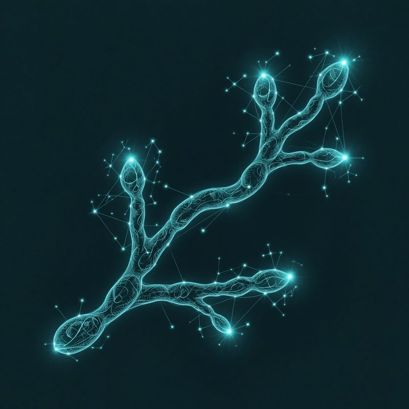
재발성 질염과 장 과증식의 주역. 가성균사를 뻗어 조직을 파고듭니다.
당을 발효시키는 미생물. SIFO의 핵심 — 몸 안에서 원치 않는 발효.
지루성 피부염·비듬의 방아쇠. 피부를 알칼리화시켜 포도상구균 악순환을 엽니다.
미생물이 만들어내는 가스 — 냄새·독성을 지닌 것과 무취 부산물.
썩은 계란 냄새. 시안화물과 같은 계열의 미토콘드리아 독성을 가집니다. SRB의 산물.
마늘 호흡의 진짜 정체. 표준 검사가 놓치는 가스이며, 불안과 강하게 연결.
황이 아닌 악취 물질. VSC 측정기로는 '정상'인데 냄새는 심한 구취의 정체.
생선 썩는 냄새의 정체. 장내 세균이 콜린을 분해해 만들며, 저용량 항생제로 다스립니다.
프로바이오틱·발효식품이 늘리는 물질. 두드러기·알러지성 두통·물 알러지의 기여자.
발효로 나오는 흔한 무취 가스. SIBO 호흡검사의 기본 측정 대상.
발효가 만드는 무취 가스. 가스·팽만감의 '부피'를 채웁니다.
메탄생성 고세균이 만드는 무취 가스. 장운동을 늦춰 변비형 팽만과 연결됩니다.
가스와 세균이 실제로 몸을 무너뜨리는 통로 — 기전 카드.
식후 분비되어 포만감을 주고 충동을 진정시키는 스위치. SRB가 이걸 꺼버립니다.
식욕·중독·감정의 중추. GLP-1이 꺼지면 도파민에 끌려다니는 '노예'가 됩니다.
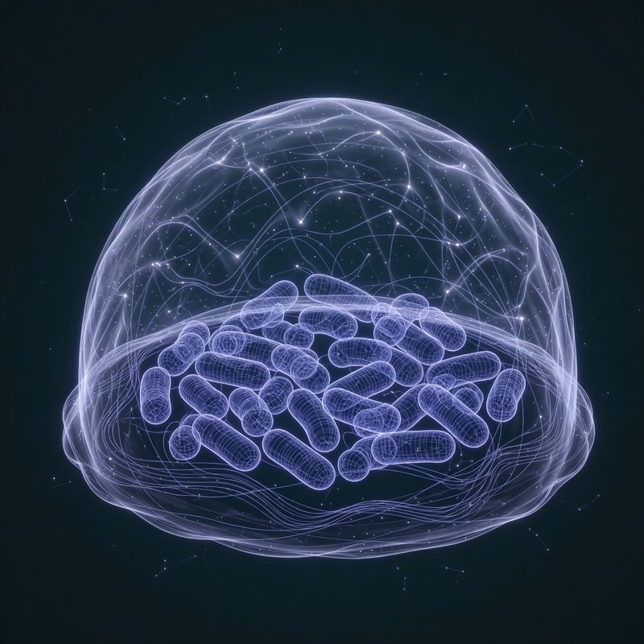
균이 스스로 만드는 끈끈한 막. 표면만 닦아선 안 잡히고, 제균이 어려운 이유.
황가스가 시안화물과 같은 방식으로 세포의 에너지 공장을 억제 → 피로·브레인포그.
장에서 만든 가스가 뇌와 감정 중추에 닿는 실제 경로. 은유가 아닙니다.
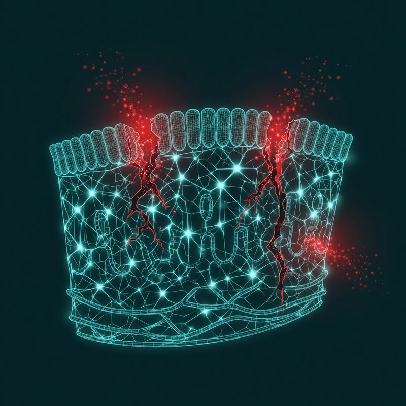
장벽의 조밀결합이 느슨해져 세균 산물이 혈류로 새는 상태. 저강도 전신 염증의 통로.
상류가 흔들면 하류에 나타나는 증상들 — 각 카드는 원인 카드를 거꾸로 가리킵니다.
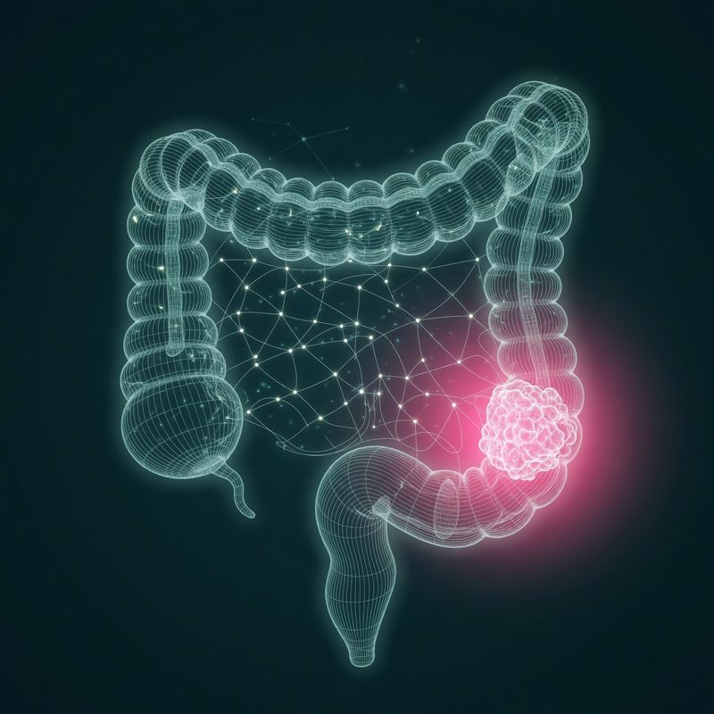
후소박테리움이 FadA로 추동하는 것으로 연구되는 암. 젊은 층에서 증가하는 추세.
VSC·인돌 계열이 만드는 입냄새. 측정이 정상이어도 존재할 수 있습니다.
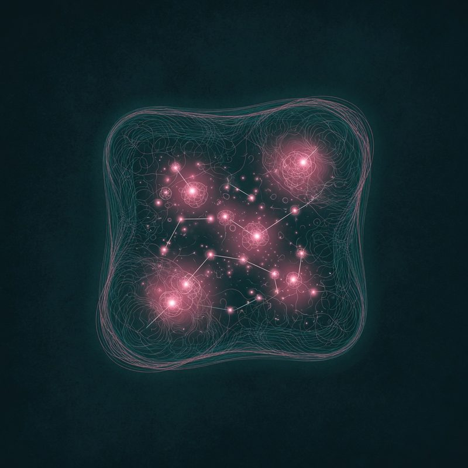
아토피·지루성·주사 — 황색포도상구균·말라쎄지아 과증식과 피부 알칼리화.
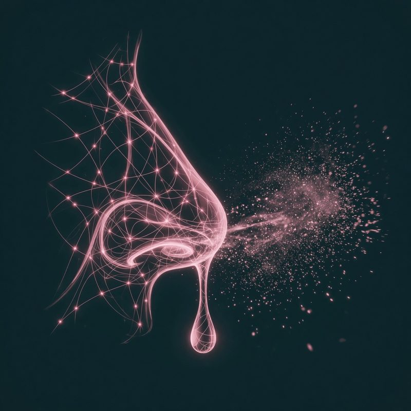
히스타민·알러지 반응과 연결되는 코 증상.
황가스 재흡입으로 인한 뇌 안개·집중 저하·만성 피로.
재발성 칸디다 질염 — 진균 과증식과 연결되는 흔한 여성 증상.
호르몬 주기와 장내 상태가 겹쳐 나타나는 주기적 증상 패턴.
에거텔라·황화수소와 연결이 연구되는 기분 저하.
나쁜 카드의 짝 — 측정하고, 굶기고, 다스리는 도구와 해법.
현대 웰니스 식단의 '거짓말 탐지기'. 표준 검사가 놓치는 황 가스를 직접 측정합니다.
난소화성 기질의 반대편. 발효를 덜 부르고 GLP-1이 정상 작동하는 탄수화물.
냄새가 있다면 원인은 세균 — 측정이 안 돼도 경험적으로 다스립니다. 다수 성공.
날것·아이스의 반대. 세균 노출을 줄이는 디컨타미네이션의 기본.
제균에 쓰는 항생제와 항진균제. 어떤 약이 어떤 표적을 겨누는지 — 실제 처방·용량은 반드시 진료로.
혐기성 세균과 원충의 표준 무기. 산소를 싫어하는 균(SRB 등)에 강합니다.
장에서 거의 흡수되지 않는 장 특화 항생제. SIBO의 표준 선택.
광범위 퀴놀론계. 그람음성균에 특히 강한 무기.
광범위 페니실린에 내성 차단제를 더한 조합. 폭넓게 씁니다.
테트라사이클린계. 광범위하면서 항염 효과도 갖습니다.
마크로라이드계. 조직·세포 안으로 잘 파고들어 바이오필름에 유리.
칸디다 등 효모에 널리 쓰이는 대표 항진균제.
광범위 항진균제. 곰팡이·말라쎄지아까지 폭넓게.
피부·손발톱 곰팡이의 대표 무기.
고지. 각 카드는 양준상 MD의 임상 프레임을 교육·성찰 목적으로 요약한 것으로, 특정 질병의 진단·치료·처방을 뜻하지 않습니다. 결과·증상 카드는 원인과의 연결이 연구·지목된다는 뜻이지 인과의 단정이 아니며, 항생제·항진균제 카드는 약의 성격을 소개할 뿐 처방·용량 안내가 아닙니다. 실제 진단·치료는 반드시 의사의 진료로 결정하세요.